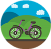

公共汽车
公共汽车，城市客车，即巴士或大巴，是客车类中大、中型客车的典型车型，是为专门解决城市和城郊运输而设计及装备的商用车。这种车辆设有乘客座椅及供乘客站立与走动的通道，要求站立面积大，车厢内通道与出入口宽、两个以上车门，踏板低。
公共汽车，城市客车，即巴士或大巴，是客车类中大、中型客车的典型车型，是为专门解决城市和城郊运输而设计及装备的商用车。这种车辆设有乘客座椅及供乘客站立与走动的通道，要求站立面积大，车厢内通道与出入口宽、两个以上车门，踏板低。
自行车，又称脚踏车或单车，通常是二轮的小型陆上车辆。人骑上车后，以脚踩踏板为动力，是绿色环保的交通工具。英文bicycle。其中bi意指二，而cycle意指轮，即两轮车。可以作为环保的交通工具用来代步、出行；越来越多的人将自行车作为健身器材用来骑行锻炼、自行车出游。
